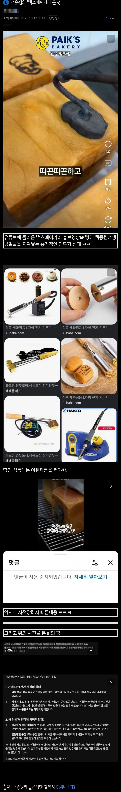

백종원의 빽스베이커리 근황.jpg
댓글
빵 고문하는거잖아
지글
게살버거의 비뻡으으므므으은!
???: 아니 쓰던걸 사용하는게 아니라 새걸 사가지고…
무쇠 프라이팬이나 무쇠 식칼 써도 상관없듯이
납,6가크롬 이런거만 검출안되면 저것도 크게 문제는 없을거임
얼마전 ai 태극기처럼 본인이 장작 계속 넣어주니까 굳이 억까할 필요없음
본 글과 별개로 무쇠“식“칼, 무쇠”프라이팬 ” 이니까 써도 되는거지 무쇠로 만드는게 다 되는건 아니란다~
https://www.dogdrip.net/729177386
개붕이의 희망사항과 다르게 식약처는 무쇠 다 써도 된데
애초에 제철소에서 탄소 0.05% 단위로 구분 할 정도로 철강 종류가 많아서
써도 되는걸 규정하는건 현실성이 없음
그래서 인체에 유해한거 안들어간 재료만 쓰라고 해놓은거
그리고 무쇠“식“칼, 무쇠”프라이팬”에 강조 표시해놨는데 뭔 의미임?
김밥 식칼로 썰면 철에 닿은 면 입에 바로 들어가고 프라이팬이나 인두나 열 받은채로 음식에 직접 닿는건데
희망사항과 다르게 ㅋㅋㅋㅋㅋㅋㅋㅋㅋㅋ
이쪽 업계 사람인데 원댓 말 맞음
렉카들 인두기 글좀 그만들고와라ㅋㅋ
혹시 “식품용 기구”라는 말을 모르니 ..?
“식품용 기구 및 용기포장의 기준규격 해설서”를 가져오면 뭐하냐 .. 식품용 기구가 아닌걸 ..
개붕이가 “나는 이걸 식품용 기구로 쓰기로 했어 !! ” 한다고 식품용 기구가 되는게 아님...
너가 하는 말은 무쇠로 만든 “브레이크 디스크 로터”위에 고기 구워먹으면서 “흥 !! ㅋㅋ 무쇠로 만들어도 됨!!” 이런거랑 똑같은거야 ..
개붕이들 지능 낮은거 알았는데 좋아요 수 충격이네
식품용기구만들 때 무쇠가 들어가도 된다는걸 이렇게 해석하면 .. 큰 일은 하면 안될듯 ..
또 개붕이의 희망사항을 한번 더 무시하게 되서 미안한데
“기구”란 다음 각 목의 어느 하나에 해당하는 것으로서 식품 또는 식품첨가물에 직접 닿는 기계ㆍ기구나 그 밖의 물건(농업과 수산업에서 식품을 채취하는 데에 쓰는 기계ㆍ기구나 그 밖의 물건 및 「위생용품 관리법」 제2조제1호에 따른 위생용품은 제외한다)을 말한다.
가. 음식을 먹을 때 사용하거나 담는 것
나. 식품 또는 식품첨가물을 채취ㆍ제조ㆍ가공ㆍ조리ㆍ저장ㆍ소분[(小分): 완제품을 나누어 유통을 목적으로 재포장하는 것을 말한다. 이하 같다]ㆍ운반ㆍ진열할 때 사용하는 것
식품위생법이 조리할때 쓰는걸 기구라고 부르기로 했데 미안해
식품용 장비 파는 사람들은
그것도 모르고 참 무식한 사람들이네 ㅋㅋ
그냥 팔아도 다 괜찬은데 왜 그랬을까 ㅉㅉ
당연히 도구 파는 놈들은 '식품용'마크 붙이고
법에 안걸린다고 본인이 보증해야되니까
식약처에서는 인증 안해줘서 시험기관에 의뢰한 결과 표기 해놓잖아
그러니까 깔거 저거 말고도 엄청 많을텐데 ㅋㅋㅋㅋㅋㅋ
실제로 무식한 사람이 많아서 그냥 택갈이로 중국산 팔다가 중금속 검출되서 영업정지 당하는곳 수두룩하잖음 ㅋㅋ
왜그러냐진짜 정신차려임마
닉값좀 해 ㅋㅋㅋㅋ
솔직히 저게 문제 될려면 우리나라에 가마솥 < 이거부터 없어져야하긴함 ㅋㅋ 밥만해도 철분 첨가되는데 ㅋ
실재 사람에게 무해한지와 별개로 식품용은 따로 인증을 받아야함

빽다방 빵연구소 가봤는데 파바가 더 맛있더라...
아무리 욕먹어도 파바가 저급에 지기 힘들지
??? : 대답해!!! 누굴 생각했지?

손님들이 철분 부족할까봐 챙겨주시는 빽대표님의 큰그림을 이렇게 폄훼하다니!!
의금부식 제빵

먹는 손님들은 신났어유~
레알 진짜 저런걸로 지진다고??
??? : 하 씨 쓰던 겁니까? 새 걸 가져다가...
빵집도 해?
빵을 고문하는거야?
무쇠는 문제 없을 걸 세척도 녹만 안생기면 뭐
댓글보니 이건 억까인거지?
베이스 호감도가 낮아서 댓글 옹호비 한 20%만 나와도 억까라고 보면 됨
저거 추노에서 본거같은데ㅋㅋㅋ
저거 내기억으론 문제없는걸로 결론나서 글삭하고 빤스런했던걸로 기억하는데 ㅋㅋ
저게 어디 철물점에서 만든건 아니고 파는걸로 기억함

ㄱ-
사진 마지막이?
저게 뭐가문제여
ㅂㅅ 똥글에 ai 답변까지 달아놨네

이거 우리 인두 아니에유
어묵빵 없음?
Ai딸깍 근거로 들고오는건 대부분 억까더라
역시 댓글이재밌어 이런건
우편오니깐 조심해